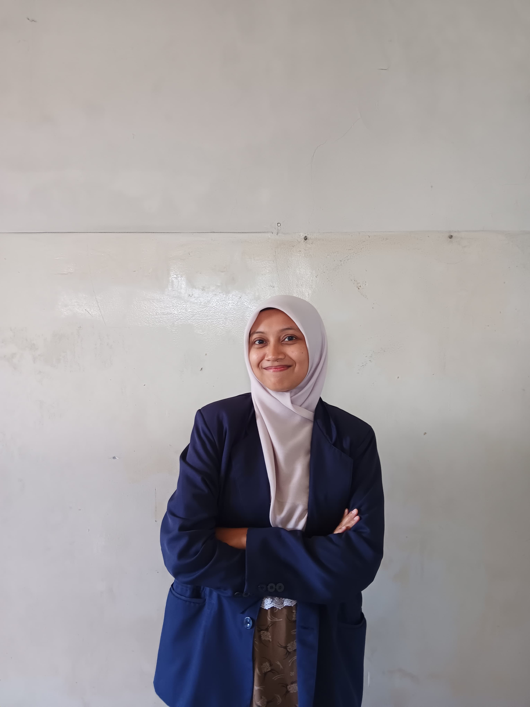

Komunikasi
Berlatih menjelaskan ide dengan bahasa yang mudah dipahami.
Halo, saya
Mahasiswa Pendidikan Guru Sekolah Dasar
Saya sedang belajar menjadi guru yang kreatif, sabar, dan mampu membuat pembelajaran menyenangkan.
Kenali SayaSaat ini saya adalah seorang mahasiswa yang sedang menempuh S1 Pendidikan Guru Sekolah Dasar di STKIP Al Hikmah Surabaya.
| Nama | : | Dian Nur Rahma |
|---|---|---|
| NIM | : | 240152057 |
| Program Studi | : | Pendidikan Guru Sekolah Dasar |
| Semester | : | 5 |
| Hobi | : | Memotret langit dan menulis AU |

Saya ingin membantu siswa memahami pelajaran dengan cara yang sederhana dan menyenangkan. Menurut saya, setiap siswa memiliki potensi yang perlu didukung.
Kemampuan dan kegiatan yang sedang saya kembangkan.
Berlatih menjelaskan ide dengan bahasa yang mudah dipahami.
Mampu membuat media yang menarik untuk pembelajaran.
Aktif dalam organisasi BEM, kepanitian kampus, dan Menjadi sekretaris HIMA periode 2025/2026.
“Menjadi guru yang sekaligus bisa dijadikan teman bagi para siswa.”
Praktik mengajar di Mi Asshomadiyah Taman dan MI Nahdlatul Ummah Golokan.
Micro teaching dilakukan setiap satu semester sekali.
Silakan hubungi saya untuk berbagi ide atau berdiskusi tentang pendidikan.
Email: dianurrhm17@gmail.com
Instagram: @film_dyrhm